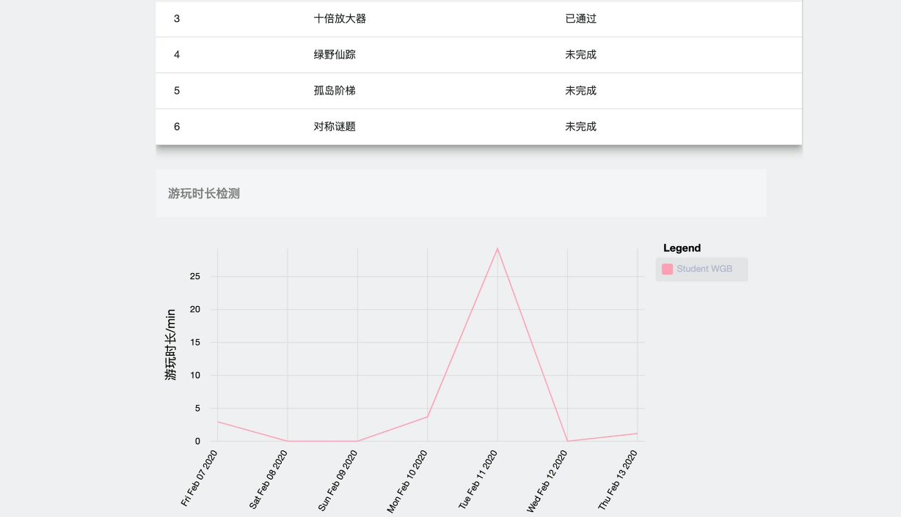

新手教程
一. 学习计算思维
1. 注册登陆之后只需要点击主页的
shopping_cart进入游戏
按钮即可开始轻松快乐的计算思维训练了。
2. 在此处您可以任意选择一个游戏来开始游玩。
3. 在游玩界面，左侧是画布，在画布内，您可以通过拖动积木来实现代码的拼接.
如果觉得不需要某块积木， 可以拖动到垃圾箱中以清除，若之后又觉得不该丢弃，还可以捡回来哦，划重点！
中间上方是游戏场景的背景描述以及 hints，中间下方是游戏场景。右侧则是提供给您进行视频聊天求助的界面。
点击运行之后，系统会向您展示游戏过程，方便您发现问题。
二. 视频救助功能
1. 发起视频求助在此处，您可以点击开房间来开设一个聊天室，您会获得您聊天室的房间号，把房间号告诉您的朋友或老师，他们便可以进入视频聊天室。
2. 进入别人的房间您需要知道别人的房间号，在此处输入房间号后点击进房间，再点击开始视频即可加入视频聊天。
3. 注意事项若房间内已有两人，您不得进入该房间。开始视频需要一点时间，请您耐心等待。
三. 查看个人信息
1. 个人信息在此处，您可以查看您的个人信息以及切换用户。
2. 游玩情况在这个界面中，您可以看到各个游戏场景的游玩情况以及最近七天的游玩时长的折线图统计。
3. 历史操作在此处，您可以看到您最近的游玩记录，也可以选择查看之前特定的某一天的游玩记录。
